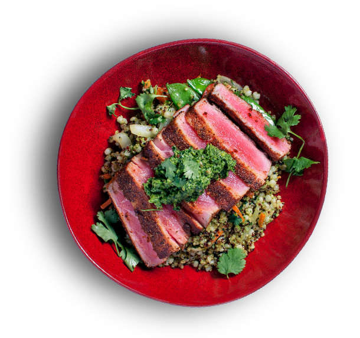
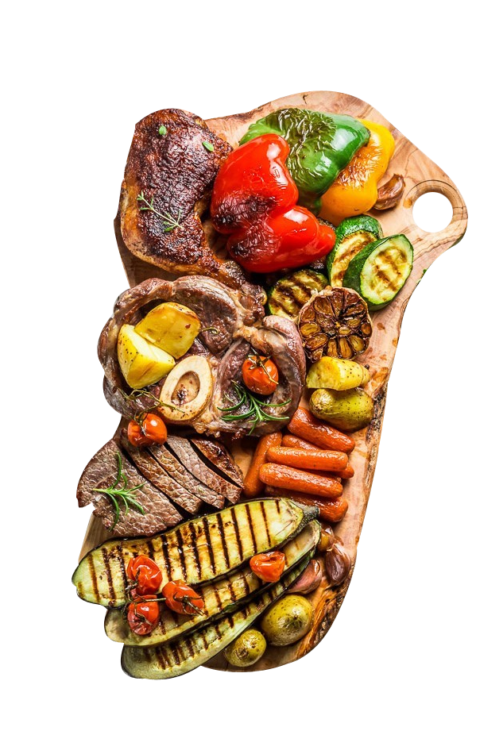
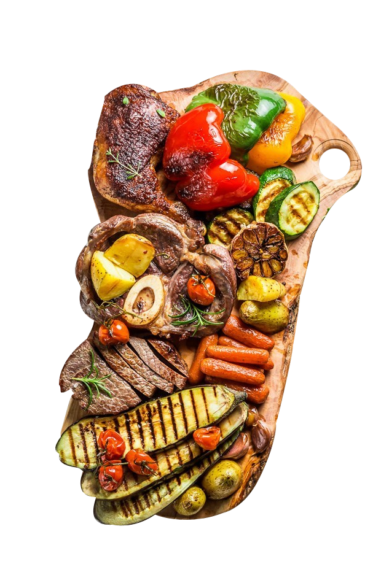

- Navigation
- Home
- Login
- Contact Us

Sign in
To make tasting easier.
A new type of
MarketplaceJoin the food revolution today.
check
View Available Locationskeyboard_arrow_right
Produce delivered Local & Fresh
Enjoy fresh, locally sourced ingredients that can come from your neighbor's garden or largest farm in your area. All ingredients from our market have been harvested within a week to guarantee freshness.
Diverse, Delightful, Dishes
Enjoy healthy, diverse dishes that can be tailored to any type of dietary restriction. The Tastery market isn't just reserved for restaurants, allowing for a tremendous expansion in the diversity of dishes we offer on the platform. Get ready for a tasty experience!
Restaurants, on Demand
Enjoy fresh, locally sourced ingredients that can come from your neighbor's garden or largest farm in your area. All ingredients from our market have been harvested within a week to guarantee freshness.

Professionals
Tastery's free marketplace allows you to order food from large farms or local gardeners looking to sell off some of their surpluses. Discover local produce today.
Food Hobbyists
Often times, the best food we eat is the food we eat at home. One of Tastery's major services is providing home cooks the certificates to sell food from their home. Pre checked and FDA approved, discover a new affordable, delicious type of food.
Couriers
And of course, much of Tastery's food is cooked by professionals, working for amazing restaurants. Get to know the cook behind your favorite food, and see what their favorite dishes are. Welcome to a new type of dining.
 
